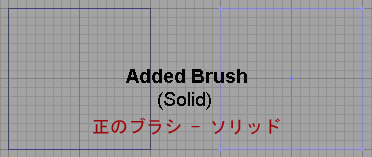
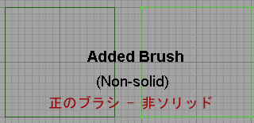
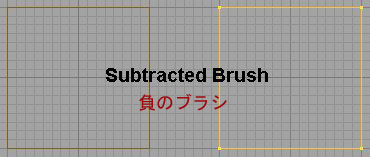
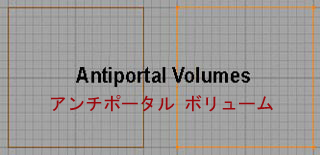
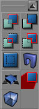
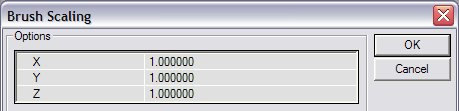

UDN
Search public documentation:
BspBrushesTutorialJP
English Translation
한국어
Interested in the Unreal Engine?
Visit the Unreal Technology site.
Looking for jobs and company info?
Check out the Epic games site.
Questions about support via UDN?
Contact the UDN Staff
한국어
Interested in the Unreal Engine?
Visit the Unreal Technology site.
Looking for jobs and company info?
Check out the Epic games site.
Questions about support via UDN?
Contact the UDN Staff
BSP ブラシ
ドキュメントの概要 :作成、変更ツールや文書に関連したリンクを含めたBSPブラシの紹介。ビギナーの方には最適です。 ドキュメントの変更ログ: Michiel Hendriks により最終更新。それ以前にはTom Lin (DemiurgeStudios)により文書概要を更新 。原作者Tony Garcia (Udnスタッフ?)BSPブラシ入門
BSP (空間分割法) という用語は、技術的にはオブジェクトを空間内で整理するために使用されるデータ構造で、ジオメトリのタイプとしては意味的に正しくないことに注意してください。unreal engine 内でブラシを追加または差し引くことにより作成されたジオメトリを正確に表現するには、CSG(構成立体表現) が用語としてより正確です。しかし、BSPはこのジオメトリを説明する用語として定着してしまいました。BSP と CSG という用語は、ブラシを使用してエディタ内で作成したジオメトリを指す意味でほぼ同義です。 BSP ブラシは、レベルの基本ビルディング ブロックです。レベルをほとんど BSP ブラシなしでビルトすることができますが、 ワールドのある部分を切り取るには最低１つの BSP ブラシが必要です。空間をソリッドと考え、ワールドが存在する領域を減算します。BSP ブラシでこの領域を減算します。BSPブラシの用途
ジオメトリをレベルに取り込むためには主に静的メッシュが使用されますが、BSPブラシには多くの使用法があります。ここでは、より詳しい文書へリンクしてその方法を説明します:- レベルが存在するメインボックス
- Sky boxes(スカイボックス)
- Zone Portals(ゾーンポータル)
- Antiportal Volumes(アンチポータル ボリューム)
- Special Volumes(スペシャル ボリューム)
- MirrorsAndWarpZones (ミラーとワープゾーン)
BSPブラシのタイプ
使用できるBSPブラシは３種類あります:- 減算 - レベルが存在する空間を削るのに使用
- 加算
- ソリッド -- 空間を埋めるものすべてに使用
- 非ソリッド -- ZonePortal(ゾーンポータル)/AntiPortal(アンチポータル)などのシートに使用
- AntiPortal ボリューム - レベル内ですべてのジオメトリ タイプを後ろへ隠すのに使用




BSPブラシの作成
 BSP ブラシを作成するには、プリミティブを選択し、アイコンを右クリックしてサイズを設定し、数値を入力します。
BSP ブラシを作成するには、プリミティブを選択し、アイコンを右クリックしてサイズを設定し、数値を入力します。

次に、[CSG]ボタンをクリックしてブラシを正
 します。
[Add Special]（特殊を追加）ボタンをクリックして、
します。
[Add Special]（特殊を追加）ボタンをクリックして、  非ソリッドブラシを追加できます(主にゾーンポータルに使用)。
[Add Antiportal]（アンチポータル）ボタンは
非ソリッドブラシを追加できます(主にゾーンポータルに使用)。
[Add Antiportal]（アンチポータル）ボタンは  レンダラーからジオメトリを遮断する非ソリッドブラシを作成します。AntiPortalの詳細は、LevelOptimization文書を参照。
レンダラーからジオメトリを遮断する非ソリッドブラシを作成します。AntiPortalの詳細は、LevelOptimization文書を参照。
BSPブラシの変更
BSP ブラシをいくつかの方法で修正できます。再形状、スケーリング、頂点の移動やブラシのクリップなど、必要に応じて形状を変更できます。ブラシを変更するモードにアクセスするには、２通りあります。１つめは、上部にあるメニューから[Brush]（ブラシ）へ行き、変更方法を選択します。 また、ツールバーからモードを選択することもできます。
また、ツールバーからモードを選択することもできます。
 ブラシを右クリックして選択するメニューを表示することもできます。また、ここから[Brush Properties]（ブラシのプロパティ）など、他にも役に立つ機能も表示できます。
ブラシを右クリックして選択するメニューを表示することもできます。また、ここから[Brush Properties]（ブラシのプロパティ）など、他にも役に立つ機能も表示できます。
頂点の編集
ツールバーから頂点編集モードを選択するか、単に頂点をクリックし、頂点を動かしている間、[CTRL]キーを押し続けます。 頂点の編集の詳しい情報は、 「頂点の編集」の文書で見つけることができます。ブラシのスケーリング
 ツールバーにある[brush scale]（ブラシのスケーリング）アイコンをクリックすると、ブラシをスケーリングできます。マウスを動かしている間に[CTRL-LMB]を押し続けても、スケーリングできます。
トップ メニューの"Brush"（ブラシ）へ行き、"Scale" (スケール) を選ぶことでもスケーリングできます。これにより"Brush Scaling" （ブラシ スケーリング）ダイアログボックスが開きます。
ツールバーにある[brush scale]（ブラシのスケーリング）アイコンをクリックすると、ブラシをスケーリングできます。マウスを動かしている間に[CTRL-LMB]を押し続けても、スケーリングできます。
トップ メニューの"Brush"（ブラシ）へ行き、"Scale" (スケール) を選ぶことでもスケーリングできます。これにより"Brush Scaling" （ブラシ スケーリング）ダイアログボックスが開きます。

それぞれの軸に数字を入れてご希望のサイズにすることができます。例えば、256 立方のブラシがあり、2 倍の高さ(512)にしたいが、同じ長さと幅にしたい場合は、2 をZ軸ボックスにいれ、他の数値は 1 にします。ブラシの回転
 [Brush Rotate]（ブラシの回転）モードを使用するか、または[CTRL]キーを押し続け、異なる2Dビューでマウスを動かしてブラシを回転できます。
[Brush Rotate]（ブラシの回転）モードを使用するか、または[CTRL]キーを押し続け、異なる2Dビューでマウスを動かしてブラシを回転できます。
ブラシのクリッピング
 ツールバーにある[Brush Clipping]（ブラシのクリッピング）ボタンをクリックすると、ブラシをクリップできます。ブラシのクリッピングに関する詳細は、「ブラシのクリッピング｣の文書をご覧ください｡
ツールバーにある[Brush Clipping]（ブラシのクリッピング）ボタンをクリックすると、ブラシをクリップできます。ブラシのクリッピングに関する詳細は、「ブラシのクリッピング｣の文書をご覧ください｡
フェースのドラッギング
 [Face Drag]（フェースのドラッギング）モードにすることにより、フェースまたはブラシの片側を移動できます。これによりブラシを引き伸ばしたり、傾斜などをつけたりすることができます。
[Face Drag]（フェースのドラッギング）モードにすることにより、フェースまたはブラシの片側を移動できます。これによりブラシを引き伸ばしたり、傾斜などをつけたりすることができます。
ブラシのプロパティ
 ブラシを右クリックすると、いくつかの機能が表示されます。他の場所ですでに説明してあるものについては省きますが、このメニューでアクセスできる機能について説明します。
ブラシを右クリックすると、いくつかの機能が表示されます。他の場所ですでに説明してあるものについては省きますが、このメニューでアクセスできる機能について説明します。
Edit（編集）
(注意: 正または負のブラシのみに作動します)- Cut (カット) - ブラシを切り取ったりクリップボードにコピーしたりします
- Copy（コピー） - クリップボードにブラシをコピーします
- Paste（ペースト） - ブラシをクリップボードからワールドへペーストします
- To Original Location (元の場所へ)
- Here（ここ）
- At World Origin（ワールドのオリジンで）
Reset（リセット）
- Move to Origin（オリジンに移動） - ピボットポイントが(0,0,0,) 座標でマップの中心にブラシを移動します
- Reset Pivot（ピボットのリセット） - 下のピボットを使用します
- Reset Rotation（回転のリセット） - ブラシを回転し、元の角度に戻したいときに使用します
- Reset Scaling （スケーリングのリセット） - サイズを変えたり、スケーリングしたブラシを元のサイズに戻します
- Reset All（全てをリセット） - スケーリングと回転したブラシを元の状態に戻します
Set（設定）
- Location/Rotation from Camera (カメラからの場所/回転) - アクティブ ウィンドウのカメラをそろえるために方向や位置を設定します
Transform（トランスフォーム）
- Scaling（スケーリング）- Brush Scaling（ブラシのスケーリング）を参照してください
- Mirroring（ミラーリング） - 与えられている軸上のブラシをミラー処理します
- Transform Permanently（完全トランスフォーム） - ブラシをスケーリングしたり回転するときは、エディタがこれを察知します（リセットできるのはそのためです）。"Transform Permanently"（完全トランスフォーム）は、ブラシに加えられたスケーリング/回転を永久的に保持します。また、頂点を編集している際、ズームインやアウトをするとブラシがビューから消える場合があります｡完全にトランスフォームすると、これを解消できます｡
Order(オーダー)
ブラシの描画順序を変更します。それほど使用されていませんが、負のブラシがまず操作され、その内部に正のものが入ることを忘れてしまったとき役に立ちます。Polygons(ポリゴン)
ブラシのポリゴンを結合または分離することができます。分割されたフェースがあり、それを１つのポリゴンに減らしたい時に使用します。結合にはフェースのテクスチャが同じで、調整されており、同じ平面上にある必要があります。これを分離させるとこの逆ができます。Type(種類)
ブラシをソリッドから非ソリッドに変更できます。セミ・ソリッドは廃止されています。Pivot(ピボット)
ピボットポイントの位置の設定やリセットに使用しますCSG (構成立体表現)
(注意: これらは、加算または減算のブラシともに使用します）- 加算 - ブラシを正のブラシに変更します
- 減算- ブラシを負のブラシに変更します
Convert (変換)
- To Static Mesh(静的メッシュへ) - 選択したジオメトリを静的メッシュに変換します
- To Brush (ブラシへ) - 選択したジオメトリのフォームにブラシを作成します
Align(調整)
- Snap to Floor(フロアにスナップ) - ジオメトリを、ジオメトリが属するBSPゾーンの一番下に移動します
- Align to Floor (フロアに調整) - ジオメトリをジオメトリが属するBSPゾーンの方向にそろえます。